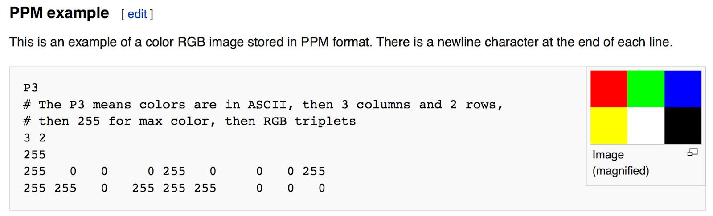
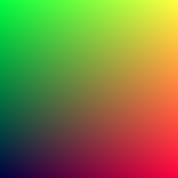
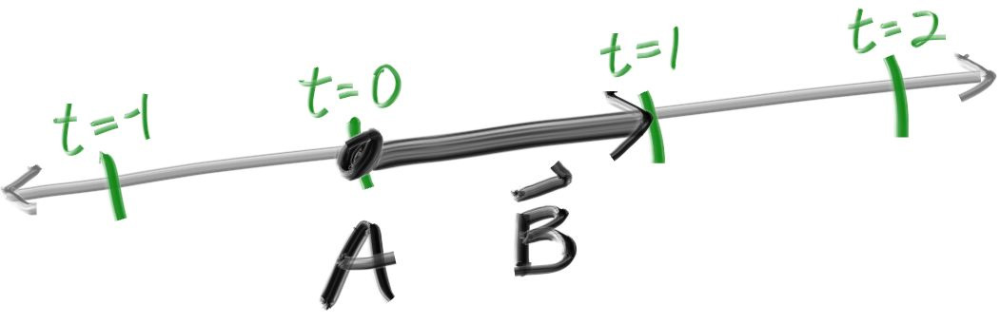
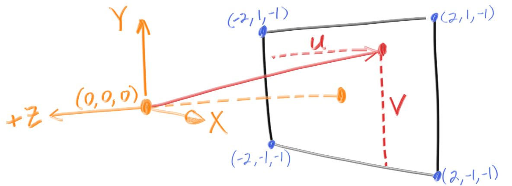
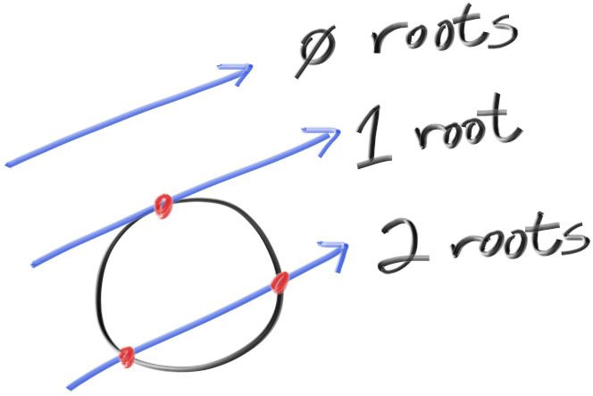
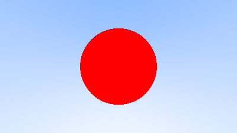

Introduce
Ray-tracing in one weekend is a great introduction to the computer graphics. It's originally based on c++, but I'm a big fan of rust. So I'd like to use rust to implement the code in the book. We should be able to finish it in one weekend, having a tracer and producing some great images.
Rust is a bit different with c++, as it has a more strict static compiler. We'll need more effort to fight with compiler! My rust code maybe is not the most elegant solution, so any contribution is highly welcomed!
Output an Image
The PPM Image Format
To build a render, we need to see an image. We choose the PPM image format. Its inner format is this from Wikipeida:

First we need some code to output such an image.fn main() { const IMAGE_WIDTH: i32 = 256; const IMAGE_HEIGHT: i32 = 256; println!("P3\n{IMAGE_WIDTH} {IMAGE_HEIGHT}\n255"); for j in (0..IMAGE_HEIGHT).rev() { for i in 0..IMAGE_WIDTH { let r = (i as f64) / (IMAGE_WIDTH as f64 - 1 as f64); let g = (j as f64) / (IMAGE_HEIGHT as f64 - 1 as f64); let b = 0.25; let ir: i32 = (255.999 * r) as i32; let ig: i32 = (255.999 * g) as i32; let ib: i32 = (255.999 * b) as i32; println!("{ir} {ig} {ib}"); } } }
Creating an Image File
That's the content of our image file, but we need to redirect it to a file like this:
./target/debug/ray_tracing > image.ppm
This works on Mac and Linux, and things should be similar on Windows, adding a .exe postfix should work.
Open such image.ppm file using ToyViewer on my Mac or any other tool you prefer, we should get such image:

And its content should be something like this when opened by a text editor.
P3
256 256
255
0 255 63
1 255 63
2 255 63
3 255 63
4 255 63
5 255 63
6 255 63
7 255 63
8 255 63
9 255 63
...
Adding a Progress Indicator
A rending process may cost lots of time. So we need an indicator to track the process and is easier to identify an infinite loop or some other errors.
We just use the std::error channel as our info output:
fn main() { const IMAGE_WIDTH: i32 = 256; const IMAGE_HEIGHT: i32 = 256; println!("P3\n{IMAGE_WIDTH} {IMAGE_HEIGHT}\n255"); for j in (0..IMAGE_HEIGHT).rev() { eprintln!("\rScanlines remaining: {j}"); for i in 0..IMAGE_WIDTH { let r = (i as f64) / (IMAGE_WIDTH as f64 - 1 as f64); let g = (j as f64) / (IMAGE_HEIGHT as f64 - 1 as f64); let b = 0.25; let ir: i32 = (255.999 * r) as i32; let ig: i32 = (255.999 * g) as i32; let ib: i32 = (255.999 * b) as i32; println!("{ir} {ig} {ib}"); } } eprintln!("\nDone"); }
The vec3 struct
Every one having used Cuda or some framework should be familiar with vec3 or .etc.
Almost every graphic program have some structs for storing geometric vector or colors.
In many systems these vectors are 4D (3D plus a homogeneous coordinate for geometry,
and RGB plus an alpha transparency channel for colors). In our usage, three coordinates
suffices. We'll use the same struct vec3 for colors, locations, directions, offsets, whatever.
Some people don’t like this because it doesn’t prevent you from doing something silly, like adding
color to a location. They have a good point, but we’re going to always take the “less code” route when
not obviously wrong. In spite of this, we do declare two aliases for vec3: point3 and color.
We use them only to clarify intent and use.
Variables and Methods
We need a new file for our vec3 struct. To do this, create a new file in the same folder as main.rs,
naming vec3.rs, and add
#![allow(unused)] fn main() { mod vec3; }
to the top of the main.rs.
Here is my implementation of Vec3 struct
#![allow(unused)] fn main() { use core::ops::*; #[derive(Debug)] pub struct Vec3 { e: (f64, f64, f64), } pub type Point3 = Vec3; pub type Color = Vec3; impl Vec3 { pub fn new() -> Vec3 { Vec3 { e: (0f64, 0f64, 0f64), } } pub fn from(e0: f64, e1: f64, e2: f64) -> Vec3 { Vec3 { e: (e0, e1, e2) } } pub fn x(&self) -> &f64 { &self.e.0 } pub fn y(&self) -> &f64 { &self.e.1 } pub fn z(&self) -> &f64 { &self.e.2 } pub fn length(&self) -> f64 { self.length_squared().sqrt() } pub fn length_squared(&self) -> f64 { self.x() * self.x() + self.y() * self.y() + self.z() * self.z() } } }
It's safe and convenient to implement clone and copy for our Vec3 struct,
as it can be cloned by only clone the memory, it's completely safe:
#![allow(unused)] fn main() { impl Clone for Vec3 { fn clone(&self) -> Self { Self { e: (*self.x(), *self.y(), *self.z()), } } } impl Copy for Vec3 {} }
And then, implement some operator trait for it
#![allow(unused)] fn main() { impl Neg for Vec3 { type Output = Vec3; fn neg(self) -> Self::Output { Self { e: (-self.x(), -self.y(), -self.z()), } } } impl AddAssign for Vec3 { fn add_assign(&mut self, rhs: Self) { self.e.0 += rhs.x(); self.e.1 += rhs.y(); self.e.2 += rhs.z(); } } impl MulAssign<f64> for Vec3 { fn mul_assign(&mut self, rhs: f64) { self.e.0 *= rhs; self.e.1 *= rhs; self.e.2 *= rhs; } } impl DivAssign<f64> for Vec3 { fn div_assign(&mut self, rhs: f64) { self.e.0 *= 1f64 / rhs; self.e.1 *= 1f64 / rhs; self.e.2 *= 1f64 / rhs; } } impl Index<i32> for Vec3 { type Output = f64; fn index(&self, index: i32) -> &Self::Output { assert!(index <= 2 && index >= 0); match index { 0 => self.x(), 1 => self.y(), 2 => self.z(), _ => unreachable!(), } } } }
as well as some tests:
#![allow(unused)] fn main() { #[cfg(test)] mod test { use super::Vec3; #[test] fn basic_ops() { let vec1 = Vec3::from(1f64, 2f64, 3f64); assert_eq!(1f64, *vec1.x()); assert_eq!(2f64, *vec1.y()); assert_eq!(3f64, *vec1.z()); assert_eq!(1f64, vec1[0]); assert_eq!(2f64, vec1[1]); assert_eq!(3f64, vec1[2]); let vec2 = -vec1; assert_eq!(-1f64, *vec2.x()); assert_eq!(-2f64, *vec2.y()); assert_eq!(-3f64, *vec2.z()); let mut vec3 = Vec3::from(5f64, 3f64, 1f64); vec3 += vec2; assert_eq!(4f64, *vec3.x()); assert_eq!(1f64, *vec3.y()); assert_eq!(-2f64, *vec3.z()); vec3 *= 2f64; assert_eq!(8f64, *vec3.x()); assert_eq!(2f64, *vec3.y()); assert_eq!(-4f64, *vec3.z()); assert_eq!(9f64, Vec3::from(1f64, 2f64, 2f64).length_squared()); assert_eq!(3f64, Vec3::from(1f64, 2f64, 2f64).length()); vec3 /= 2f64; assert_eq!(4f64, *vec3.x()); assert_eq!(1f64, *vec3.y()); assert_eq!(-2f64, *vec3.z()); } } }
We use f64 here, but some ray tracer use f32, that is float. Either is fine.
Vec3 utility Functions
The second part of the file contains vector utility functions.
#![allow(unused)] fn main() { impl PartialEq for Vec3 { fn eq(&self, other: &Self) -> bool { self.x() == other.x() && self.y() == other.y() && self.z() == other.z() } } impl Display for Vec3 { fn fmt(&self, f: &mut std::fmt::Formatter<'_>) -> std::fmt::Result { f.write_str(format!("{} {} {}", self[0], self[1], self[2]).as_str()) } } impl Add for Vec3 { type Output = Self; fn add(self, rhs: Self) -> Self::Output { Self { e: (self.x() + rhs.x(), self.y() + rhs.y(), self.z() + rhs.z()), } } } impl Sub for Vec3 { type Output = Self; fn sub(self, rhs: Self) -> Self::Output { Self { e: (self.x() - rhs.x(), self.y() - rhs.y(), self.z() - rhs.z()), } } } impl Mul for Vec3 { type Output = Self; fn mul(self, rhs: Self) -> Self::Output { Self { e: (self.x() * rhs.x(), self.y() * rhs.y(), self.z() * rhs.z()), } } } impl Mul<f64> for Vec3 { type Output = Self; fn mul(self, rhs: f64) -> Self::Output { Self { e: (self.x() * rhs, self.y() * rhs, self.z() * rhs), } } } impl Mul<Vec3> for f64 { type Output = Vec3; fn mul(self, rhs: Vec3) -> Self::Output { rhs * self } } impl Div<f64> for Vec3 { type Output = Vec3; fn div(self, rhs: f64) -> Self::Output { (1f64 / rhs) * self } } impl Vec3 { pub fn dot(lhs: &Vec3, rhs: &Vec3) -> f64 { lhs.x() * rhs.x() + lhs.y() * rhs.y() + lhs.z() * rhs.z() } pub fn cross(lhs: &Vec3, rhs: &Vec3) -> Vec3 { Self { e: ( lhs.y() * rhs.z() - lhs.z() * rhs.y(), lhs.z() * rhs.x() - lhs.x() * rhs.z(), lhs.x() * rhs.y() - lhs.y() * rhs.x(), ), } } pub fn unit_vector(&self) -> Self { *self / self.length() } } }
And it's test:
#![allow(unused)] fn main() { #[test] fn utility_funtions() { let vec1 = Vec3::from(1f64, 2f64, 3f64); assert_eq!(String::from("1 2 3"), vec1.to_string()); let vec2 = Vec3::from(2f64, 3f64, 4f64); let vec3 = vec1 + vec2; assert_eq!(3f64, *vec3.x()); assert_eq!(5f64, *vec3.y()); assert_eq!(7f64, *vec3.z()); let vec4 = vec3 - vec2; assert_eq!(vec4.x(), vec1.x()); assert_eq!(vec4.y(), vec1.y()); assert_eq!(vec4.z(), vec1.z()); let vec5 = vec4 * vec2; assert_eq!(2f64, *vec5.x()); assert_eq!(6f64, *vec5.y()); assert_eq!(12f64, *vec5.z()); let vec6 = vec4 * 2f64; assert_eq!(2f64, *vec6.x()); assert_eq!(4f64, *vec6.y()); assert_eq!(6f64, *vec6.z()); let vec6 = 2f64 * vec4; assert_eq!(2f64, *vec6.x()); assert_eq!(4f64, *vec6.y()); assert_eq!(6f64, *vec6.z()); let vec7 = vec6 / 2f64; assert_eq!(1f64, *vec7.x()); assert_eq!(2f64, *vec7.y()); assert_eq!(3f64, *vec7.z()); assert_eq!(14f64, Vec3::dot(&vec7, &vec1)); assert_eq!(Vec3::from(1f64, -2f64, 1f64), Vec3::cross(&vec3, &vec1)); assert_eq!( Vec3::from(1f64 / 3f64, 2f64 / 3f64, 2f64 / 3f64), Vec3::from(1f64, 2f64, 2f64).unit_vector() ) } }
Color Utility Functions
Using our Vec3 struct, we'll create a utility function to write a
single pixel's color out to the standard output stream.
Write the following code to a new file called color.rs, add mod color; to
the top of main again.
#![allow(unused)] fn main() { use crate::vec3::*; pub fn write_color<T: std::io::Write>(mut fmt: T, pixel_color: Color) -> std::io::Result<()> { fmt.write_fmt(format_args!( "{} {} {}\n", (255.999 * pixel_color.x()) as i32, (255.999 * pixel_color.y()) as i32, (255.999 * pixel_color.z()) as i32 )) } }
Now we can change our main to use this:
use crate::color::*; use crate::vec3::*; mod color; mod vec3; fn main() { const IMAGE_WIDTH: i32 = 256; const IMAGE_HEIGHT: i32 = 256; println!("P3\n{IMAGE_WIDTH} {IMAGE_HEIGHT}\n255"); for j in (0..IMAGE_HEIGHT).rev() { eprintln!("\rScanlines remaining: {j}"); for i in 0..IMAGE_WIDTH { let pixel_color: Color = Color::from( (i as f64) / (IMAGE_WIDTH as f64 - 1f64), (j as f64) / (IMAGE_HEIGHT as f64 - 1f64), 0.25, ); write_color(std::io::stdout(), pixel_color).unwrap(); } } eprintln!("\nDone"); }
This should be able to generate the same output as the previous Chapter.
Rays, a Simple Camera, and Background
The ray Struct
The one thing that all ray tracers have is a ray struct and a computation of what color is seen along a ray. Let’s think of a ray as a function $$ \textbf{P}(\textit{t}) = A + \textit{t}b $$. Here \(\textbf{P}\) is a 3D position along a line in 3D. \(textbf{A}\) is the ray origin and $b$ is the ray direction. The ray parameter \(\textit{t}\) is a real number (f64 in the code). Plug in a different \(\textit{t}\) and \(\textbf{P}(\textit{t})\) moves the point along the ray. Add in negative \(\textit{t}\)values, and you can go anywhere on the 3D line. For positive \(\textit{t}\), you get only the parts in front of \(\textbf{A}\), and this is what is often called a half-line or ray.

The function \(\textbf{P}(\textit{t})\) in more verbose code form I call ray::at(t)
Create a new ray struct, no need to mention to add ray mod in main.rs, right?
#![allow(unused)] fn main() { use crate::vec3::*; pub struct Ray { orig: Point3, dir: Vec3, } impl Ray { pub fn from(origin: Point3, direction: Vec3) -> Ray { Ray { orig: origin, dir: direction, } } pub fn origin(&self) -> Point3 { self.orig } pub fn direction(&self) -> Vec3 { self.dir } pub fn at(&self, t: f64) -> Point3 { self.orig + t * self.dir } } }
Sending Rays Into the Scene
Now we are ready to turn the corner and make a ray tracer. At the core, the ray tracer sends rays through pixels and computes the color seen in the direction of those rays. The involved steps are:
- calculate the ray from the eye to the pixel
- determine which objects the ray intersects
- compute a color for that intersection point
When first developing a ray tracer, I always do a simple camera for getting the code up and running.
I also make a simple ray_color(ray) function that returns the color of the background (a simple gradient).
I’ve often gotten into trouble using square images for debugging because I transpose \(\textit{x}\) and \(\textit{y}\) too often, so I’ll use a non-square image. For now we'll use a 16:9 aspect ratio, since that's so common.
In addition to setting up the pixel dimensions for the rendered image, we also need to set up a virtual viewport through which to pass our scene rays. For the standard square pixel spacing, the viewport's aspect ratio should be the same as our rendered image. We'll just pick a viewport two units in height. We'll also set the distance between the projection plane and the projection point to be one unit. This is referred to as the “focal length”, not to be confused with “focus distance”, which we'll present later.
I’ll put the “eye” (or camera center if you think of a camera) at \((0,0,0)\). I will have the y-axis go up, and the x-axis to the right. In order to respect the convention of a right handed coordinate system, into the screen is the negative z-axis. I will traverse the screen from the upper left hand corner, and use two offset vectors along the screen sides to move the ray endpoint across the screen. Note that I do not make the ray direction a unit length vector because I think not doing that makes for simpler and slightly faster code.

Below in code, the ray r goes to approximately the pixel centers(I won't worry about exactness for now because we'll add anti-aliasing later):
use crate::color::*; use crate::ray::*; use crate::vec3::*; mod color; mod ray; mod vec3; fn main() { // Image const ASPECT_RATIO: f64 = 16f64 / 9f64; const IMAGE_WIDTH: i32 = 400; const IMAGE_HEIGHT: i32 = (IMAGE_WIDTH as f64 / ASPECT_RATIO) as i32; // Camera let viewport_height = 2f64; let viewport_width = ASPECT_RATIO * viewport_height; let focal_length = 1f64; let origin = Point3::from(0f64, 0f64, 0f64); let horizontal = Vec3::from(viewport_width, 0f64, 0f64); let vertical = Vec3::from(0f64, viewport_height, 0f64); let lower_left_corner = origin - horizontal / 2f64 - vertical / 2f64 - Vec3::from(0f64, 0f64, focal_length); // Render println!("P3\n{IMAGE_WIDTH} {IMAGE_HEIGHT}\n255"); for j in (0..IMAGE_HEIGHT).rev() { eprintln!("\rScanlines remaining: {j}"); for i in 0..IMAGE_WIDTH { let u = (i as f64) / (IMAGE_WIDTH as f64 - 1f64); let v = (j as f64) / (IMAGE_HEIGHT as f64 - 1f64); let r: Ray = Ray::from( origin, lower_left_corner + u * horizontal + v * vertical - origin, ); let pixel_color = ray_color(&r); write_color(std::io::stdout(), pixel_color).unwrap(); } } eprintln!("\nDone"); } fn ray_color(r: &Ray) -> Color { let unit_direction: Vec3 = r.direction().unit_vector(); let t = 0.5 * (unit_direction.y() + 1f64); (1f64 - t) * Color::from(1f64, 1f64, 1f64) + t * Color::from(0.5, 0.7, 1f64) }
The ray_color(ray) function linearly blends white and blue depending on the height of the \(\textit{y}\)
coordinate after scaling the ray direction to unit length (so \(-1.0 < \textit{y} < 1.0\)). Because
we're looking at the \(\textit{y}\) height after normalizing the vector, you'll notice a horizontal
gradient to the color in addition to the vertical gradient.
I then did a standard graphics trick of scaling that to \(0.0 <= \textit{t} <= 1.0\). When \(t = 1.0\) I want blue. When \(t = 0.0\) I want white. In between, I wanta blend. This forms a "linear blend", or "linear interpolation", or "lerp" for short, between two things. A lerp is always of the form:
$$ blendedValue = (1-\textit{t}) * startValue + \textit{t} * endValue $$
with \(\textit{t}\) going from zero to one. In our case this produce:
Adding a Sphere
Let’s add a single object to our ray tracer. People often use spheres in ray tracers because calculating whether a ray hits a sphere is pretty straightforward.
Ray-Sphere Intersection
Recall that the equation for a sphere centered at the origin of radius \(\textbf{R}\) is $$ \textit{x}^2 + \textit{y}^2 + \textit{z}^2 = \textbf{R}^2 $$ Put another way, if a given point \((\textit{x},\textit{y},\textit{z})\) is \(\textit{inside}\) the sphere, then $$ \textit{x}^2 + \textit{y}^2 + \textit{z}^2 < \textbf{R}^2 $$ , and if a given point \(\textit{x}, \textit{y}, \textit{z}\) is outside the sphere, then $$ \textit{x}^2 + \textit{y}^2 + \textit{z}^2 > \textbf{R}^2 $$
It gets uglier if the sphere center is at \((C_x,C_y, C_z )\): $$ (x-C_x)^2 + (y-C_y)^2 + (z-C_z)^2 = r^2 $$
In graphics, you almost want your formulas to be in terms of vectors so all the \(x/y/z\) stuff is under the hood in the vec3 class. You might note that the vector from center \(\textbf{C} = (C_x, C_y, C_z)\) to point \(\textbf{P} = (x,y,z)\) is \((\textbf{P}-\textbf{C})\), and therefore
$$ (\textbf{P}-\textbf{C}) \cdot (\textbf{P}-\textbf{C}) = (x-C_x)^2 + (y-C_y)^2 + (z-C_z)^2 $$
So the equation of the sphere in vector form is: $$ (\textbf{P} - \textbf{C}) \cdot (\textbf{P} - \textbf{C}) = r^2 $$
We can read this as "any point \(\textbf{P}\) that satisfies this equation is on the sphere". We want to know if our ray \(\textbf{P}(t)=\textbf{A}+t\textbf{b}\) ever hits the sphere anywere. If it does hit the sphere, there is some \(t\) for which \(\textbf{P}(t)\) satisfies the sphere equation. So we are looking for any \(t\) where this is true: $$ (\textbf{P}(t)-\textbf{C})\cdot(\textbf{P}(t)-\textbf{C}) = r^2 $$
or expanding the full form of the ray \(\textbf{P}(t)\): $$ (\textbf{A}+t\textbf{b}-\textbf{C})\cdot(\textbf{A}+t\textbf{b}-\textbf{C})=r^2 $$
The rules of vector algebra are all that we would want here. If we expand that equation and move all the terms to the left hand side we get: $$ t^2\textbf{b}\cdot\textbf{b} + 2t\textbf{b}\cdot(\textbf{A}-\textbf{C})+(\textbf{A}-\textbf{C})\cdot(\textbf{A}-\textbf{C})-r^2=0 $$
The vectors and \(r\) in that equation are all constant and known. The unknown is \(t\), and the equation is a quadratic, like you probably saw in your high school math class. You can solve for \(t\) and there is a square root part that is either positive (meaning two real solutions), negative (meaning no real solutions), or zero (meaning one real solution). In graphics, the algebra almost always relates very directly to the geometry. What we have is:

Creating Our First Raytraced Image
If we take that math and hard-code it into our program, we can test it by coloring red any pixel that hits a small sphere we place at −1 on the z-axis:
#![allow(unused)] fn main() { fn hit_sphere(center: &Point3, radius: f64, r: &Ray) -> bool { let oc: Vec3 = r.origin() - *center; let a = Vec3::dot(&r.direction(), &r.direction()); let b = 2.0 * Vec3::dot(&oc, &r.direction()); let c = Vec3::dot(&oc, &oc) - radius * radius; (b * b - 4.0 * a * c) > 0f64 } fn ray_color(r: &Ray) -> Color { if hit_sphere(&Point3::from(0f64, 0f64, -1f64), 0.5, r) { return Color::from(1f64, 0f64, 0f64); } let unit_direction: Vec3 = r.direction().unit_vector(); let t = 0.5 * (unit_direction.y() + 1f64); (1f64 - t) * Color::from(1f64, 1f64, 1f64) + t * Color::from(0.5, 0.7, 1f64) } }
What we get is this:

Now this lacks all sorts of things — like shading and reflection rays and more than one object — but we are closer to halfway done than we are to our start! One thing to be aware of is that we tested whether the ray hits the sphere at all, but \(t<0\) solutions work fine. If you change your sphere center to \(z=+1\) you will get exactly the same picture because you see the things behind you. This is not a feature! We’ll fix those issues next.